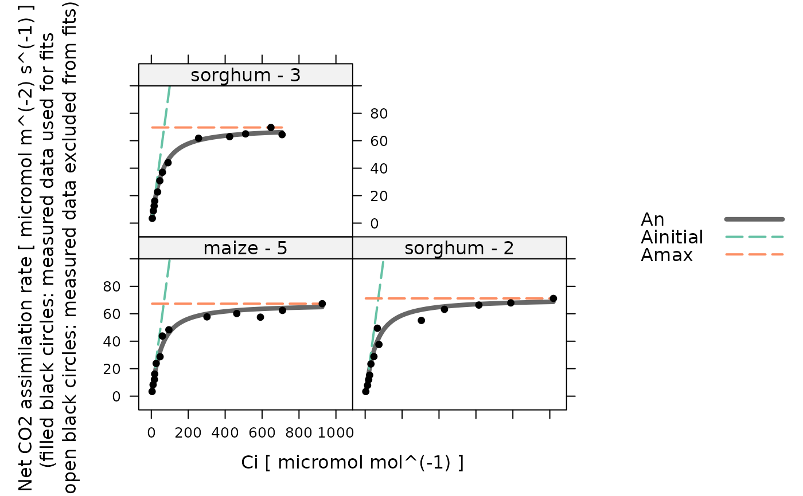

Make an initial guess of C4 hyperbola parameter values for one curve
initial_guess_c4_aci_hyperbola.RdCreates a function that makes an initial guess of C4 hyperbola model
parameter values for one curve. This function is used internally by
fit_c4_aci_hyperbola.
Values estimated by this guessing function should be considered inaccurate, and should always be improved upon by an optimizer.
Details
Here we estimate values of c4_curvature, c4_slope, rL,
and Vmax from a measured C4 CO2 response curve. For more information
about these parameters, see the documentation for
calculate_c4_assimilation_hyperbola.
Here we take a very simple approach to forming the initial guess. We always
choose c4_curvature = 0.5, c4_slope = 1.0, and rL = 0.0.
For Vmax, we use Vmax = max{A} - rL_guess, where max{A}
is the largest observed net CO2 assimilation rate and rL_guess is the
guess for rL.
Value
A function with one input argument rc_exdf, which should be an
exdf object representing one C4 CO2 response curve. The return value of
this function will be a numeric vector with four elements, representing the
values of c4_curvature, c4_slope, rL, and Vmax
(in that order).
Examples
# Read an example Licor file included in the PhotoGEA package
licor_file <- read_gasex_file(
PhotoGEA_example_file_path('c4_aci_1.xlsx')
)
# Define a new column that uniquely identifies each curve
licor_file[, 'species_plot'] <-
paste(licor_file[, 'species'], '-', licor_file[, 'plot'] )
# Organize the data
licor_file <- organize_response_curve_data(
licor_file,
'species_plot',
c(9, 10, 16),
'CO2_r_sp'
)
# Create the guessing function
guessing_func <- initial_guess_c4_aci_hyperbola()
# Apply it and see the initial guesses for each curve
str(by(licor_file, licor_file[, 'species_plot'], guessing_func))
#> List of 3
#> $ maize - 5 : num [1:4] 0.5 1 0 67.3
#> $ sorghum - 2: num [1:4] 0.5 1 0 71.2
#> $ sorghum - 3: num [1:4] 0.5 1 0 69.6
# Calculate simulated A-Ci curves based on the guesses and compare them to the
# actual data
calculated_aci <- do.call(rbind, by(
licor_file,
licor_file[, 'species_plot'],
function(x) {
param <- guessing_func(x)
calculate_c4_assimilation_hyperbola(
x,
param[1], param[2], param[3], param[4]
)
}
))
lattice::xyplot(
A + Ainitial + Amax + An ~ Ci | species_plot,
data = cbind(licor_file, calculated_aci)$main_data,
type = 'b',
auto = TRUE,
grid = TRUE,
ylim = c(0, 100),
par.settings = list(
superpose.line = list(col = multi_curve_line_colors()),
superpose.symbol = list(col = multi_curve_point_colors(), pch = 16)
)
)
